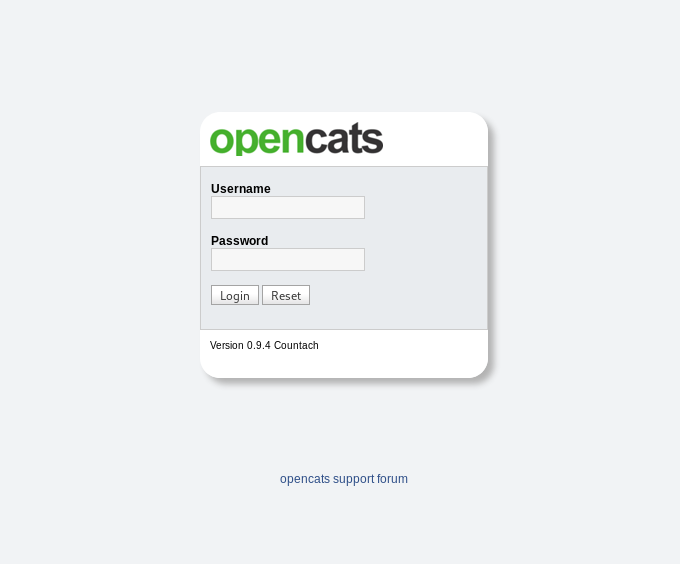

Empline Room
Welcome everyone ! In this write-up I will show you, how I solved this room step by step. This room has new ideas starting with enumuration and ending with privilege escalation.
Type of room: boot2root
Link of room on tryhackme: Empline room
I will devide this write-up into 3 sections. Enumuration, Exploitation and Privilege Escalation. So let's get started !!
========================
Section 1: ENUMURATION
========================
1) Scanning ports
As always, we start our enum with nmap scanning ports.
Commnad: nmap -sSCV -O 10.10.247.178
From the result, we noted that there is 3 open ports:
- 22 ssh
- 80 http Apache httpd 2.4.29 ((Ubuntu))
- 3306 mysql MySQL 5.5.5-10.1.48-MariaDB-0ubuntu0.18.04.1
In addition, I scanned all the ports to just make sure that there are no other open ports. As I expected only these 3 ports were open.
2) Let's visit the webpage running on port 80
This is a static website that does't contain any useful information.
3) So now, let's enumurate hidden directories and files in the target.
Command: ffuf -u http://10.10.114.37/FUZZ -w /usr/share/seclists/Discovery/Web-Content/raft-medium-directories-lowercase.txt
- It turned out that there are 3 hidden directories: assets, javascript, server-status. After surfing these directories I didn't note any useful information.
4) Brute force subdomains
From my experience with CTF's there are often hidden subdomains. To do this, first of all we need to add “empline.thm” domain to our /etc/hosts file. As below:
Now for this purpose I will use my favourite tool, which is: ffuf
Command: ffuf -u http://empline.thm -c -w /usr/share/seclists/Discovery/DNS/subdomains-top1million-5000.txt -H 'HOST: FUZZ.empline.thm' -fs 14058
In the result, we get two subdomains “job” and “www.job”
Before visiting the page job.empline.thm, we need to add this subdomain to /etc/hosts file.
5) Let's visit the page job.empline.thm
As we see, on this subdomain is running OpenCats which is a free and open source applicant tracking system (ATS) used to track job applicants.
- Name of application: OpenCats
- Version: 0.9.4 Countach
6) Enum hidden directories in the subdomain job.empline.thm using “gobuster”
Command: gobuster dir -w /usr/share/dirbuster/wordlists/directory-list-2.3-medium.txt -u http://job.empline.thm
We can see that there are several directories. After trying a few of them, we choose /careers directory.
7) Let's visit the page: job.empline.thm/careers
- After that enter “Show All Jobs”
- Then go to “Mobile Dev”
- Next “Apply the Position”
- Finally we are on upload page
========================
Section 2: EXPLOITATION
========================
After googling, I found that this version of this application suffer from XML External Entity Injection vulnerability that allows unautheticated applicants to read files on the running operating system after uploading a resume with .docx file. I found this on the following page:
According to the tutorial on the page, we need to do the following steps:
1) Create a resume.docx file with sample text, e.g.: John Brown
2) Unzip the resume.docx file and modify the contents in “word/document.xml”
Command: unzip resume.docx
3) Modify and edit the word/document.xml file. Two modifications are needed.
3.1) Add this command under the first line to read /etc/passwd file.
3.2) Find and change the name “John Brown” to &test;

4) The modifications to document.xml need to be saved to the resume.docx file.
Command: zip resume.docx word/document.xml

5) Now just upload the resume.docx file to opencats form.
- Once the resume.docx file is uploaded then the contents of /etc/passwd was shown.
6) Read sensitive file config.php
At this point, we can use this technique to read some sensitive files which has credentials as a plaintext. One of these files is Opencats config.php file which contain a plaintext passowrds. To read this file to recover plaintext password, we need to base64 encode the contents.
- zip the resume.docx file again and upload it to opencats page.
7) Now lets decode the base64 encoded contents of config.php
- Create and copy the encoded contents to “config.php” file. Then decode it using “base64” tool.
Command: cat config.php | base64 -d
8) Credentials obtained from the decoded config.php file
9) Using above creds, we can login to mysql server as user:james and password:ng6pUFvsGNtw
Command: mysql -h empline.thm -u james -p
10) Show all databases on this server
11) Choose the opencats database
Command: MariaDB [(none)]> use opencats
12) Show all tables in this database
13) Print user_name nad password columns from the “user” table
- From above we get 3 users name with their hashed passwords
14) Crack the passwords
In order to crack the hashes I used Crackstaion.
user name: george
hashed password: 86d0dfda99dbebc424eb4407947356ac
crack password: pretonnevippasempre
15) Based on gathered creds we will try to login to SSH as george.
- user: george
- pass: pretonnevippasempre
Yeeesss !! We did it

17) The user.txt file is under /home/george directory
18) Read the user.txt file

========================
Section 3: PRIVELGE ESCALATION
========================
After a long search about misconfigurations in the system, finally I found the linux capabilities misconfiguration.
1) Search about Linux capabilities
Command: getcap -r / 2> /dev/null
- From the previous result we can see that “ruby" binary has the Linux cap_chown capability set. This capability allow user to make arbitrary change to files UIDs and GIDs (full filesystem access).
- So we can use chown function to change the user and group of /etc/shadow to be george/george. Then edit and modify the password of root.
2) create a file with a malicious ruby code: exploit.rb
3) run the script using ruby
Command: ruby exploit.rb
4) create a new hashed password using openssl tool.
Command: openssl passwd -1 -salt abc newpassword
-1: MD5-based password alogrithm
-salt abc: the salt is ‘abc’
the password is: newpassword
5) then copy this hash and replace the root's hash in the /etc/shadow file
6) login as root with password "newpassword"
Command: su root
Congratulations!!! You are now ROOT !